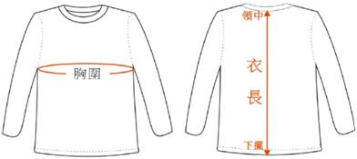

[報名參加本活動前，務必詳閱簡章全部內容，確保自身權益]
時間
|
活動項目
|
07:00~08:20
|
參賽跑者集合、衣物寄放
|
07:50
|
開幕典禮
|
08:00
|
來賓致詞
|
08:20
|
裁判長提示注意事項
|
08:30
|
鳴槍起跑
|
11:00~15:15
|
餐點供應
|
12:00
|
頒獎典禮
|
15:10
|
比賽結束(限時6小時30分)
|
15：30
|
※全部活動結束、珍重再見※
|
項目
|
馬拉松(42.195公里)
|
|
網路報名總額限制
|
4000名
|
|
比賽日期
|
2018年3月4日
|
|
起跑時間
|
08:30
|
|
限時
|
6小時30分(另加計人龍時間10分鐘)
|
|
折返點關門時間
|
折返點(去程21.6K處)
|
12:00
|
水站關門時間
|
第六水站(回程23.8K處)
|
12:25
|
|
第五水站(回程27.3K處) |
12:50 |
|
| 第四水站(回程30.5K處) | 13:20 | |
|
第三水站(回程34.1K處) |
13:50 | |
|
第二水站(回程37.1K處) |
14:15 | |
|
第一水站(回程39.6K處) |
14:40 | |
終點關門時間
|
15:10
|
|
報名日期
|
2017年10月5日10:00至2017年10月31日23:59止
|
|
報名費
|
NT$:1,200元(已含郵寄費及晶片押金NT$:100元)
|
|
完賽紀念品
|
完賽獎牌、浴巾、瓶水、餐點。
完跑成績證明電子檔(參賽跑者於規定時間內完賽，可在完賽三日後，上網下載成績證明電子檔；本活動不提供紙本證明。)
|
|
以上完跑限時時間，以大會時間為準，終點關門時間已加計人龍通過時間10分鐘。
組別
|
年 齡
|
高齡組
|
70歲以上(民國37年以前出生者)
|
男甲組
|
60-69歲(民國47-38年出生者)
|
男乙組
|
50-59歲(民國57-48年出生者)
|
男丙組
|
40-49歲(民國67-58年出生者)
|
男丁組
|
30-39歲(民國77-68年出生者)
|
男戊組
|
18-29歲(民國89-78年出生者)
|
女甲組
|
50以上歲(民國57年以前出生者)
|
女乙組
|
40-49歲(民國67-58年出生者)
|
女丙組
|
30-39歲(民國77-68年出生者)
|
女丁組
|
18-29歲(民國89-78年前出生者)
|
|
排汗衫尺寸表 |
||||||
|
型號 |
XS |
S |
M |
L |
XL |
2L |
|
建議尺寸 |
35~50kg |
45~53kg |
50~63kg |
60~73kg |
70~85kg |
85~100kg |
|
胸圍(英吋) |
34 |
36 |
38 |
40 |
42 |
44 |
|
衣長(英吋) |
23 |
24 |
25 |
26 |
27 |
28 |
|
請實際丈量平常所穿衣服尺寸，再對應此表選擇型號；實品增減1英吋為正常誤差值。 |
||||||
|
 |
||||||
作業期限(以繳費日期為判斷日)
|
應繳付行政作業費用(VIP無優惠)
|
限制項目
|
|
無
|
除人名及身分證號外，無限制項目；加列初馬獎者需加收NT$:300元/人
|
2017/12/1～2017/12/31 |
NT$:200元/每人
|
加列初馬獎者需加收NT$:300元/人
|
2018/1/1以後 |
不接受資料修改
|
不接受資料修改
|
註一：人名及身分證號不可以修改。
註二：如有多人資料需修改，請將金額乘以人數；如總金額與欲修改的人數無法匹配時，大會將逕行由表列前面的人員資料開始修改起，逐一扣除金額，至金額用盡為止，名列後面人員即不修改；如有餘額，不足NT$:100元者，將以對方付費郵寄方式，現金退費；超過NT$:100元，將扣除NT$:100元作業費，餘額匯入申請人帳戶。
註三：繳費銀行帳戶：國泰世華銀行，帳號：069-03-500555-2；戶名：新北市馬拉松協會唐湘東。 |
||
全程馬拉松--男女總名次
|
|
男子組
|
女子組
|
第一名8仟元+獎盃
|
第一名8仟元+獎盃
|
第二名7仟元+獎盃
|
第二名7仟元+獎盃
|
第三名6仟元+獎盃
|
第三名6仟元+獎盃
|
第四名5仟元+獎盃
|
|
第五名4仟元+獎盃
|
|
第六名3仟元+獎盃
|
|
第七名2仟元+獎盃
|
|
第八名2仟元+獎盃
|
|
|
里程數(km)去程/回程 |
站別 |
補給站供應內容 |
|
0 |
起點站 第一醫護站 |
水 簡易醫療 |
|
3.5/39.6 |
第一水站
第二醫護站 |
水、運動飲料、水果、具熱量食品、鹽 簡易醫療 |
|
6.1/37.1 |
第二水站 |
水、運動飲料、水果、具熱量食品、鹽 |
|
9/34.1 |
第三水站 第三醫護站 |
水、運動飲料、水果、具熱量食品、鹽 簡易醫療 |
|
12.6/30.5 |
第四水站 |
水、運動飲料、水果、具熱量食品、鹽 |
| 15.8/27.3 |
第五水站 |
水、運動飲料、水果、具熱量食品、鹽 |
|
17.5/25.6 |
第四醫護站 |
簡易醫療 |
|
19.3/23.8 |
第六水站 |
水、運動飲料、水果、具熱量食品、鹽 |
|
42.195 |
終點站 |
完成獎牌、浴巾、瓶水、餐點 |
1.會場設有一處醫療站，賽道上至少設有3站醫療站，每一水站均備有救護箱，水站間均安排有數名機動巡檢人員騎乘機車於水站間巡視，參賽跑者有救援需要時，請直接向醫療站醫護人員或水站志工或機動巡檢人員要求協助。
2.賽事當日賽道為供救護車或救護機動車順利通行，沿線除預留安全通道外，管制車輛通行。
3.有緊急醫療情況發生時，傷患將按地區緊急醫療系統，後送至地區責任醫院。
1.大會於活動當日07:00時起接受衣物保管。
2.請使用耐用的衣物保管袋寄物。
3.送交保管時，請出示本次活動號碼布，賽後憑寄物發放的寄物貼紙領取。
4.請於活動當日15:30時前領取保管物品。
5.貴重物品、電子產品、易碎物品請自行保管，若有遺失、損壞，大會恕不負責。
1.違反下列規定者，取消比賽成績:
(1)禁止互換晶片、禁止配帶他人晶片、禁止一人帶二個晶片，違者列為失格，成績全部不予以計算，不得異議。
(2)起跑點位於開放性道路，參賽跑者需準時出發，鳴槍起跑10分鐘後，晶片地墊感應設備將移除，超過起跑時間10分鐘後出發者，為安全考量大會有權限制其出發及不予計算成績。
(3)晶片未確實繫好，導致脫落(不可用金屬性物品繫綁)，以致沒有成績應自行負責。
(4)全部參賽跑者檢錄以晶片地墊感應取代人工劃記，提早起跑成績無效。
(5)不服從裁判引導者。
(6)至折返點，未索取信物或未經晶片感應地墊者視同棄賽。
(7)嚴禁於比賽進行時，騎乘腳踏車、推行娃娃車、滑行直排輪、滑板及滑板車等運用輔助器材行為。
(8)
號碼布未確實佩帶於胸前，導致無法辨識身分，終點裁判將禁止參賽跑者進入終點前100公尺賽道。2.違反下列規定者，取消比賽成績，並禁止參加大會舉辦之活動一年。
(1)比賽進行中參賽跑者借助他人幫助而獲利者。
(2)報名組別與身分證明資格不符者。
(3)冒名頂替報名者資格參加比賽者。
(4)違反運動精神和道德者(如打架、辱罵裁判及大會工作人員……)。
(5)嚴禁非報名跑者取代報名參賽跑者參加比賽，代參賽跑者及被代參賽跑者一經查明屬實，由裁判長宣佈成績無效外，另將禁賽一年，並於網路上公佈代參賽跑者及被代參賽跑者姓名。
1. 參賽跑者無論在任何情況下，絕不能借助他人之幫助競賽。參賽跑者應循比賽路徑競賽，不可超越捷徑，或以其他交通工具為之，違者喪失資格。
2. 所有參賽跑者必須佩帶大會發給之號碼布，號碼布別於胸前以利裁判辨識，參賽跑者跑抵終點時，若無大會號碼布、起點檢錄標記及折返點信物者，或於大會規定時間內無法完成全程者，其名次及成績均不予計算，且恕不頒贈完成獎牌及成績証明。另為維持賽會秩序及品質，大會有權將未佩戴大會號碼布的跑者隔離出賽道，請跑者配合。
3.巡迴裁判會收取中途棄賽跑者的晶片，晶片押金當場退回，參賽跑者不得異議。參賽跑者回會場後，仍可憑號碼布領取浴巾及餐點。
4.大會嚴格執行關門時間，凡未於時限內通過指定點的參賽跑者，大會得強制收容上車，並收取晶片，晶片押金當場退回，參賽跑者不得異議。參賽跑者回會場後，仍可憑號碼布領取浴巾及餐點。
1. 比賽爭議：競賽中各參賽跑者不得當場質詢裁判，若與田徑規則同等意義之註明者，均以裁判為準，不得提出申訴。
2.申訴程序：有關競賽所發生的問題，須於各組成績公佈10分鐘內，向大會提出，同時繳保證金NT$:1,000元整，由獎典組簽具收執聯；所有申訴以大會判決為終決；若無理申訴，沒收保證金。
1. 大會為參賽跑者投保公共意外責任險(所有細節依大會與保險公司簽訂之保險契約為準)；投保項目及金額如下：
(1) 每人體傷責任新臺幣三百萬元。
(2) 每一意外事故體傷責任新臺幣一千五百萬元以上。
(3) 每一意外事故財物損失責任新臺幣二百萬元以上。
(4) 保險期間最高賠償金額新臺幣三千四百萬元以上。
2. 報名表內各欄請務必詳實填寫，如有錯漏，導致喪失保險效力，應自行負責。請參賽跑者自行檢視當日狀況，量力而為，並於活動前一日做好充足的睡眠，當日起跑前2個小時吃早餐。
3. 公共意外險承保範圍：被保險人因在保險期間內發生下列意外事故所致第三人體傷、死亡或第三人財物損害，依法應負賠償責任，而受賠償請求時，保險公司對被保險人負賠償之責：(1)被保險人或其受僱人因經營業務之行為在本保險單載明之營業處所內上發生之意外事故。(2)被保險人在經營業務之建築物、通道、機器或其他工作物所發生之意外事故。
4. 特別不保事項：(1)個人疾病導致運動傷害。(2)因個人體質或因自身心血管所致之症狀，例如休克、心臟症、糖尿病、熱衰竭、中暑、高山症、癲癇、脫水等。對於因本身疾患所引起之病症將不在保險範圍內，而公共意外險只承擔因外來意外所受之傷害理賠。
5. 參賽跑者如遇與跟第二項所述之疾病之病史，建議參賽跑者慎重考慮自身安全，自行加保個人人身保險。※如您曾發生過以下病況及有以下疾病狀況，屬猝死高危險群，請諮詢專業醫師的判斷，勿勉強參加。(1)不明原因的胸部不適(胸悶、胸痛)；(2)不明原因的呼吸困難；(3)不明原因頭暈；(4)突然失去知覺；(5)高血壓(>140/90mmHg)；(6)心臟病；(7)腎功能異常；(8)糖尿病；(9)高血脂(總膽固>240mg/Dl)；(10)家族心臟病史(一等親在60歲前發生心臟病或猝死)；(11)癲癇。
1.禁菸禁火聲明:為維護賽會場地-校園安全，本活動會場全面禁菸、禁火，如工作人員發現，將立刻進行規勸，勸導不聽者，大會有權取消其參賽資格與大會參賽成績；如因賽事工作需要明火，需經大會及場地學校同意。
2.跑者報名時請詳加評估自身身體狀況及是否具有能力在限時內完成比賽，必要時請自行洽詢專業醫師協助評估。
3.未完成報名者不具參賽資格，嚴禁代跑，代跑者不受本賽事保險保障；代跑者如有意外發生，轉讓者應負保險理賠及法律責任，大會相關單位不負任何責任。
4.不論任何理由，參賽跑者未經大會同意，將參賽權轉讓他人使用，因而造成大會權益受損，大會有權向該原參賽跑者索取相關損失全額賠償。
5
.建議參賽跑者視當天健康狀況量力而為，並請於活動前一日做充分睡眠，當日起跑前2個小時用餐完畢。6.請參賽跑者務必考量本身健康狀況，安全第一，出場競賽前，若身體不適，請勿出場競賽；競賽期間身體不適，應即停止競賽；若勉強參賽，而發生任何事故，主辦單位概不負責。
7.晶片使用之操作方式請參賽跑者於賽前詳閱晶片使用說明，或請現場服務人員協助操作。
8.晶片為計時的依據，請確實通過各感應點，並確認佩帶晶片的腳有踩踏過感應地墊，沒有按照大會規定使用晶片，導致無成績者，大會一概不負責。
9.請參賽跑者衡量自身實力，切勿爭先恐後，發揮運動家精神，禮讓實力較佳參賽跑者優先出發。
10.請參賽跑者準時出發，超過起跑時間10分鐘後出發者，大會有權禁止其出發及不予計算成績。
11.請參賽跑者隨身攜帶健保卡。
12.請參賽跑者勿將垃圾隨意丟棄，會場及各水站均設有多個垃圾收集容器，請多加利用，共同維護大自然景觀及參賽跑者形象。
13.
請參賽跑者務必衡量自身狀況，量力而為，並做好必要之防熱(或防寒)保護措施，若身體不適或有中暑(失溫或無法排汗)癥兆，應立即停止跑步，並向沿線志工請求支援。為保護參賽跑者安全，若經大會裁判、醫護人員現場判定參賽跑者不宜繼續比賽，大會得強制收容，參賽跑者不得有異議。14.賽事當日若熱中暑危險係數【公式=室外溫度(℃)+室外相對濕度(%)×0.1】大於40時，大會有權停止賽事活動，以避免參賽跑者中暑。
15.賽事過程如有陪跑情事(如百馬陪跑團)，請注意賽道安全，尤其在進終點前後，避免碰撞意外發生。
16.大會於現場僅做必要緊急醫療救護。
17.大會已為參賽跑者投保公共意外險，對於參賽跑者本身疾患引起的病症不在承保範圍內，而公共意外險只因意外所受的傷害做理賠，請於賽前務必自行請專業醫師協助做好參賽健康風險評估。(保險所有細節依大會與保險公司簽訂之保險契約為準)
18.本賽事不印製紙本秩序冊，請參賽跑者自行至大會網站查看活動內容。
19.賽事當日賽道為供救護車或救護機動車順利通行，沿線除預留安全通道外，並管制車輛通行。
20.
賽道自賽事前一日起至賽事結束時，禁止停車。21.活動現場可停車區域離會場均有相當距離，敬請多搭乘大眾運輸工具或共乘。
22.遊覽車停車建議：可停放在台2丙線(雙柑公路)、中山路(共和大橋以東路段)、102甲(雙澳公路)，避免進入市區，進入會有迴轉困難的問題。
23.小型汽車停車建議：梅竹蹊路至平林橋、雙溪高中大門前至中山路與泰和街岔路口、泰和街禁止停車；除路邊未畫紅、黃線或路中有雙黃線的道路(含市區)外，均可路邊停放；道路狹窄路段及居民住宅門口前請避免停車。理想停放地點：東榮街(公所以東)、中山路(泰和街路口以東)、台2丙、102、102甲縣道。
當日賽事進行期間，突發足以影響賽事進行的天然災害時，大會會逕行終止賽事活動，參賽跑者請接受大會人員指引，或自行行動，到最近的水站或雙溪高中操場集合，等待救援。
1.報名費申請退費時(限已完成報名的參賽跑者為申請人)，請以Email通知大會(大會Email：tpmarathon@gmail.com)，Email內需檢附申請人姓名、身分證號、出生年月資料、訂單號碼、申請人本人的帳戶帳號(需列帳戶所屬金融機構全名)，大會將扣除已發生的行政作業費用，按下表金額退費(已加計晶片押金金額)，一旦完成退費作業，申請人就喪失參賽資格，且不寄送任何報到參賽物品給申請人。申請人屬團體報名，大會將主動轉寄Email給原團體報名負責人。
作業期限
|
每人退費金額
|
註記
|
2017/11/30以前
|
NT$:1000元
(VIP僅退NT$:400元) |
有報初馬獎者加退NT$:300元
|
2017/12/01~2017/12/31 |
NT$:700元
(VIP僅退NT$:200元) |
有報初馬獎者可於賽後至2018/3/20前，申請以貨到付款方式（預估NT＄120元），寄送初馬獎
|
2018/1/1以後
|
不接受退費申請
|
2.晶片押金將於比賽會場在參賽跑者交還晶片時發還，賽事當天未能交回晶片者，請於賽後一週內（2018/3/12止），至「新北市中和區永和路92-2號一樓」退回，逾期未繳回晶片者，晶片押金恕不退還。
3.本活動除氣象局發佈該地陸上颱風警報及活動地區發生重大災難外，均照常舉行。若參賽跑者因當地發佈颱風警報(活動當日往前推算3日內)，而無法前來參賽，得申請退還報名費，惟須扣除相關費用。
1.
因應個資法規，參賽跑者完成報名時，視同同意授權本活動保險承保單位使用參賽跑者身分證明資訊於本活動相關事務上。
2.大會有權將此項比賽之錄影、相片及成績於世界各地播放、展出、販售、登錄於大會網站與大會刊物上，參賽跑者必須同意肖像與成績，用於上述相關比賽之宣傳與播放活動上。不同意者請勿報名參賽。
3.個資保護宣告如下：
|
大會為落實個人資料保護，依據個資法第8條規定告知下列事項：依個人資料保護法等相關法令規定，在主管機關所核准之特定目的範圍內蒐集的姓名、身份證字號、生日、住址、性別、國籍、電話、電子郵件、緊急聯絡人及其地址、電話等；針對前述個人資料，大會只會在活動的範圍及期間內處理或利用。大會蒐集的個人資料，原則上僅會以電子檔或紙本形式供大會、委外廠商或與大會具有合作、委任等關係之第三人處理及利用。大會保有你所提供的個人資料，依據個資法第3條規定，你可以對你本人的個人資料行使下述的權利：
1.
查詢或請求閱覽你的個人資料。
2.
請求製作給你的個人資料複製本。
3.
請求補充或更正你的個人資料。
4.
請求停止蒐集、處理或利用你的個人資料。
5.
請求刪除你的個人資料。 你欲行使上述提及之相關權利時，大會服務專線為0966-621541。大會基於上述原因而需蒐集、處理或利用你的個人資料時，你可以自由選擇是否提供你的個人資料。若你選擇不提供個人資料或是提供不完全時，將可能導致無法成功報名本活動，或無法就本活動進行投保。另你因活動所需，有蒐集參賽跑者或相關人之個人資料並提供予大會之必要時，請依照本告知事項內容，向當事人充分說明並告知關於其個人資料保護的相關權益。 |
1. 賽務方面:賽務詢問,變更郵寄資料等。
網址：http://www.taipeimarathon.org.tw/
聯絡地址：新北市中和區永和路92-2號一樓。
銀行帳戶：國泰世華銀行，帳號：069-03-500555-2；戶名：新北市馬拉松協會唐湘東
2.報名、繳費(報名期間)及證書列印(賽後一個月內)等問題:
Email：service@ibodygo.com
上班時間可電洽02-2218-0902(9:00~12:00及14:00~17:00)
本活動簡章內容如有未盡事宜，將陸續於官方網站補充公告。
{kind=link}